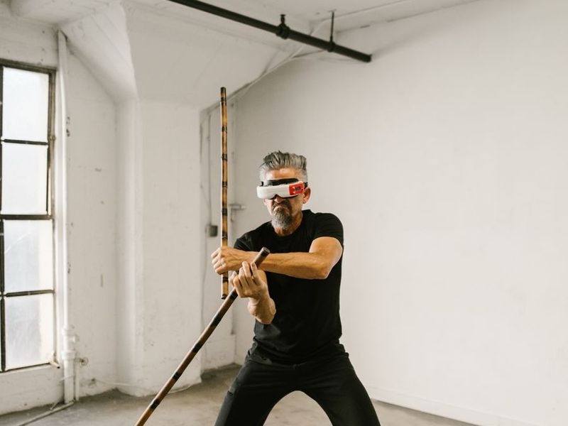
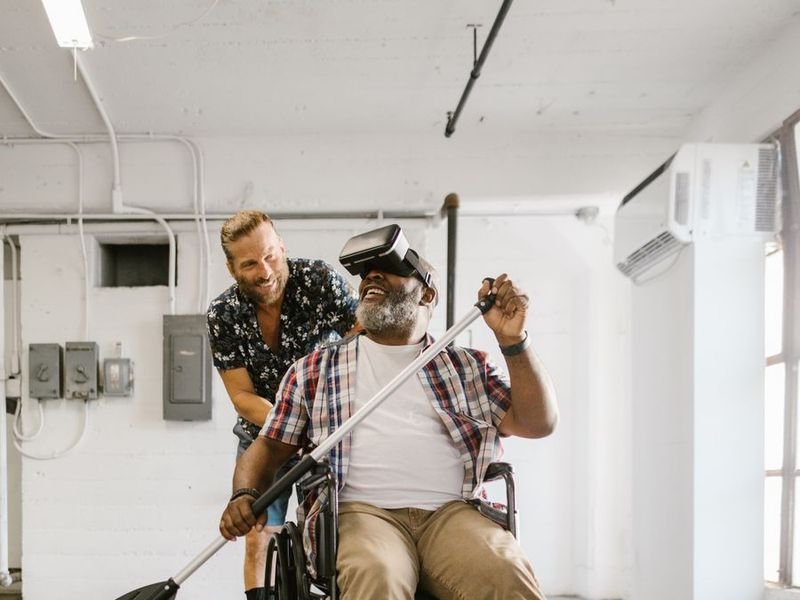
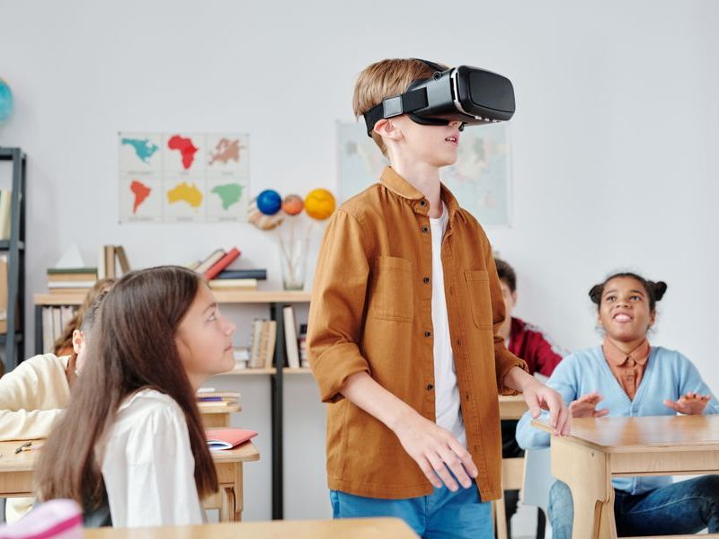
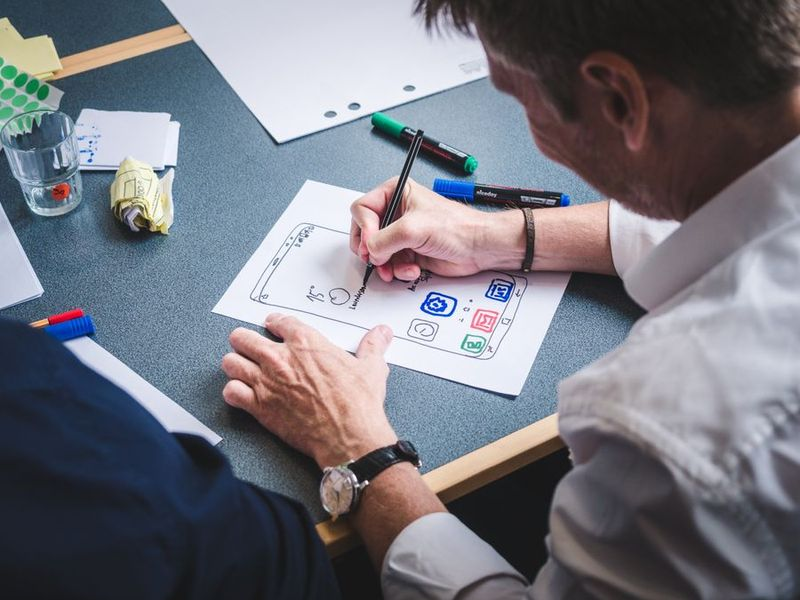

A hand with weight
Palm and finger colliders push, enclose and lift. A pinch alone is not a grab; contact decides.
Tangible VR usually depends on extra hardware: haptic or data gloves, props fitted with trackers, markers or motion sensors, or controllers strapped to objects. Every prop has to be instrumented, powered and calibrated.
My contribution is a sensorless approach. Nothing is attached to the object or your hand; the headset’s own hand tracking is enough. A one-time alignment and a physics hand I built in code decide when you are really holding the object, so its virtual copy follows the real one.
Line the prop up once in passthrough. Then the physics hand makes contact and you lift the real object.
Palm and finger colliders push, enclose and lift. A pinch alone is not a grab; contact decides.
After a one-time alignment in passthrough, real contact gives the touch and the virtual copy follows with mass and gravity.
Everything runs on the headset. You line the object up once in passthrough; after that, tracked hand joints drive a physics hand, and the virtual copy follows only when your hand is really holding it.
Directions this prototype opens up. None of them are tested yet.

Practise with the actual tool in hand inside a virtual scene.

Real reach and grip, with virtual guidance and feedback.

Hold an object and see its forces and future motion.

Test a tangible idea before building tracked hardware.
Photos: Pexels